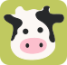

больше всего просмотров
Один кофе — сколько пастись?
Что мы покупаем в кафе вместе с напитком и как работать за столиком, не чувствуя себя лишним.
Читать статью
коровкинг
А пока заходи в наши соцсети или погуляй
по готовым страницам.
вечерние места и ночные зоны
Пространства с продлённым режимом работы, созданные для комфортной длительной учёбы.
статья, которую можно почитать
Дальше на сайте будут появляться большие тексты о местах, учёбе и работе вне дома.
места, куда можно прийти компанией
Залы, где можно спокойно готовиться к парам и экзаменам: без шума и с розетками у каждого стола.
Мы команда студентов, которым надоело искать розетку и тишину наугад. Собрали карту мест, где правда удобно учиться, работать и встречаться.
Коровкинг про то, чтобы пастись там, где комфортно: с хорошим кофе, быстрым Wi-Fi и без лишних вопросов.
Подбираем места под задачу и настроение, собираем подборки и пишем короткие статьи для тех, кто учится и работает вне дома.
А ещё есть быстрый выбор: ответь на пару вопросов, и мы предложим подходящее пространство.
Мы команда студентов, которым надоело искать розетку и тишину наугад. Собрали карту мест, где правда удобно учиться, работать и встречаться.
Коровкинг про то, чтобы пастись там, где комфортно: с хорошим кофе, быстрым Wi-Fi и без лишних вопросов.
Каждое место мы проверяем
лично: розетки, Wi-Fi, тишина
и цены на кофе.
Стоимость, расписание,
правила посещения и необходимость
предварительной записи.
Формат пространства: для усердной
работы, спокойного чтения
или живого обсуждения.
Первая статья от редакции коровкинга. Дальше на сайте будут появляться большие тексты о местах, учёбе и работе вне дома.
Что мы покупаем в кафе вместе с напитком и как работать за столиком, не чувствуя себя лишним.
Читать статьюНебольшая команда, которая любит кофе, тишину и розетки рядом со столом.
Исследует пользователей
и следит, чтобы проект решал их
реальные проблемы.
Собрали ответы на то, о чём нас спрашивают чаще всего.
Каждое место мы проверяем лично: розетки, Wi-Fi, тишину, цены на кофе и то, как долго можно сидеть за столиком.
Напишите нам в официальный канал: название, адрес и пару слов о том, чем место удобно для учёбы или работы.
Да, все подборки и статьи на сайте бесплатные. Платить нужно только за кофе в самих местах.
Зависит от места. Если с питомцами можно, мы отмечаем это в описании.
Да, постепенно будем добавлять новые города. Следите за новостями в нашем канале.
Остались вопросы?
Задать свой вопрос